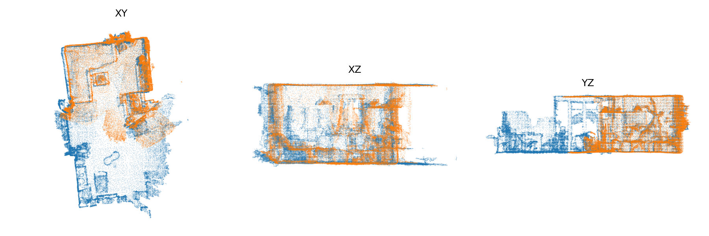
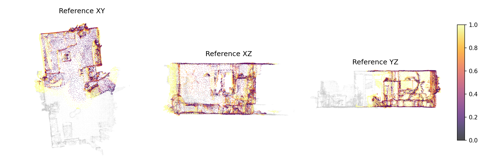
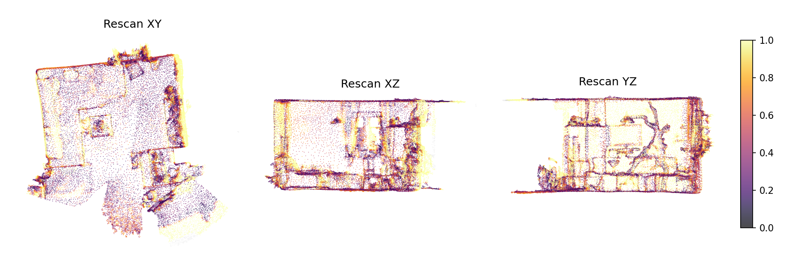

| split | validation |
|---|---|
| reference_scan_id | 280d8ebb-6cc6-2788-9153-98959a2da801 |
| rescan_scan_id | 4731976c-f9f7-2a1a-95cc-31c4d1751d0b |
| reliability | unreliable |
| comparable_ratio_ref | 0.602 |
| comparable_ratio_rescan | 0.994 |
| overlap_ref | 0.246 |
| overlap_rescan | 0.442 |
| overlap_mean | 0.344 |
| overlap_gate_value | 0.246 |
| unchanged_ratio_ref_obs | 0.667 |
| unchanged_ratio_rescan_obs | 0.742 |
| voxel_size_m | 0.02 |
| tau_m | 0.1 |
| overlap_delta_m | 0.05 |
| nn_search_radius_m | 0.5 |
| overlap_min | 0.3 |
| translation_scale_applied | 1.0 |
| runtime_sec | 1.09 |



| objectId | label_ref | label_rescan | score | type | type_confidence | ref_support_total | ref_support_observed | ref_ratio_changed_obs | ref_p95_changed_dist | res_support_total | res_support_observed | res_ratio_changed_obs | res_p95_changed_dist | low_support |
|---|---|---|---|---|---|---|---|---|---|---|---|---|---|---|
| 28 | gymnastic ball | unknown | 1.0000 | disappeared | 0.40 | 388 | 47 | 1.0000 | 0.4958 | 0 | 0 | 0.0000 | 0.0000 | True |
| 41 | picture | unknown | 1.0000 | disappeared | 0.40 | 97 | 97 | 1.0000 | 0.1671 | 0 | 0 | 0.0000 | 0.0000 | False |
| 52 | frame | frame | 0.8941 | unknown | 0.20 | 85 | 85 | 0.8941 | 0.1522 | 112 | 112 | 0.6875 | 0.1673 | False |
| 6 | window | window | 0.7698 | unknown | 0.20 | 9007 | 4414 | 0.7698 | 0.4773 | 2268 | 2268 | 0.2765 | 0.1772 | False |
| 33 | shelf | shelf | 0.6291 | unknown | 0.20 | 437 | 437 | 0.3913 | 0.1508 | 515 | 515 | 0.6291 | 0.1687 | False |
| 44 | pillow | pillow | 0.6050 | unknown | 0.20 | 59 | 59 | 0.5424 | 0.1577 | 119 | 119 | 0.6050 | 0.2202 | False |
| 17 | tv | tv | 0.4842 | unknown | 0.20 | 727 | 727 | 0.4842 | 0.1747 | 645 | 645 | 0.4806 | 0.1689 | False |
| 42 | pillow | pillow | 0.4828 | unknown | 0.20 | 87 | 87 | 0.4828 | 0.1630 | 100 | 100 | 0.3900 | 0.1369 | False |
| 49 | plant | plant | 0.4792 | disappeared | 0.40 | 384 | 384 | 0.4792 | 0.2232 | 3 | 3 | 0.0000 | 0.0000 | False |
| 35 | firewood box | firewood box | 0.4357 | unknown | 0.20 | 2300 | 2277 | 0.4357 | 0.4128 | 2157 | 2118 | 0.3267 | 0.4561 | False |
| 43 | pillow | pillow | 0.3983 | unknown | 0.20 | 118 | 118 | 0.3983 | 0.1628 | 154 | 154 | 0.0455 | 0.1198 | False |
| 20 | tv stand | tv stand | 0.3649 | unknown | 0.20 | 1047 | 1047 | 0.3649 | 0.1668 | 1084 | 1084 | 0.2832 | 0.1685 | False |
| 51 | tree decoration | tree decoration | 0.3553 | unknown | 0.20 | 2468 | 2468 | 0.3553 | 0.1663 | 2574 | 2574 | 0.1321 | 0.1663 | False |
| 48 | plant | plant | 0.3350 | unknown | 0.20 | 200 | 200 | 0.3350 | 0.1700 | 250 | 250 | 0.1400 | 0.1323 | False |
| 53 | decoration | decoration | 0.3293 | unknown | 0.20 | 331 | 331 | 0.3293 | 0.1796 | 294 | 294 | 0.2517 | 0.1550 | False |